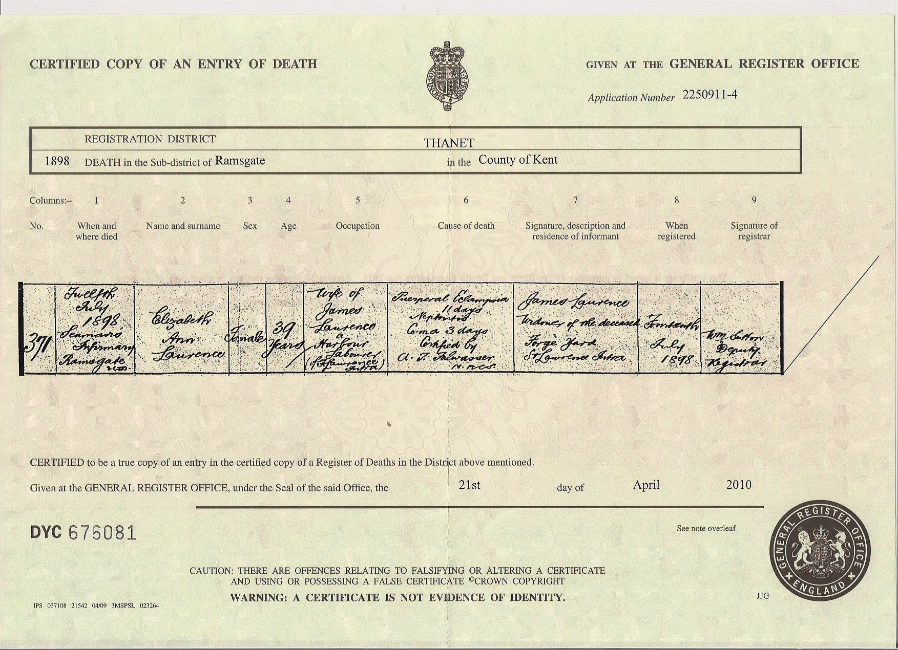
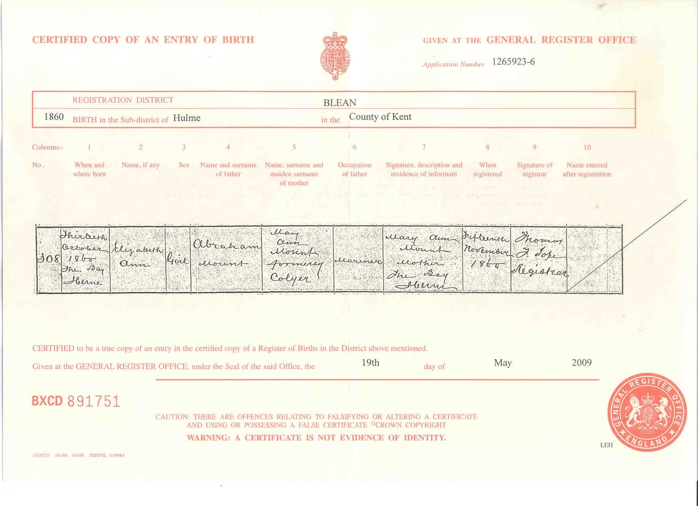
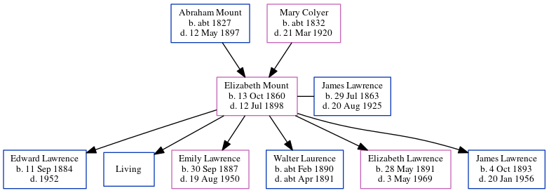

Elizabeth Ann Lawrence (née Mount) 1860 - 1898
[ Home ] | [ Calendar ] | [ Surnames Index ] | [ Errors ] | [ Family History ]A domestic servant and the child of Abraham Mount (a mariner) and Mary Colyer (a charwoman), Elizabeth Mount, the great-grandmother of Nigel Horne, was born in Herne Bay, Kent, England on 13 Oct 18601,2,3,4,5, was baptised there at Christ Church on 25 Nov 1860 and married James Lawrence (an agricultural labourer with whom she had 6 children: Edward James S, William John, Emily Jane, Walter Charles, Elizabeth Annie and James Thomas, along with 1 surviving child) at Ebenezer Chapel, Meeting Street, Ramsgate, Kent, England on 10 Dec 18826 (Ebenezer Chapel, Meeting Street, Ramsgate).
During her life, she was living on Salts Lane in Herne Bay on 2 Apr 18718; at Edith Villa, Edith Road, St Lawrence, Thanet, Kent on 3 Apr 18812; and at 10 Claremont Gardens in Ramsgate on 5 Apr 18917 - less than a mile from her niece Emily Lawrence who was living at 10 Claremont Gardens in Ramsgate.
She died on 12 Jul 1898 at Seaman's Infirmary, West Cliff Road in Ramsgate5 (pre-eclampsia followed by a coma.).
Parents
- Abraham was born c. 1827
- Mary Ann was born c. 1832
Children
- Edward James S was born on 11 Sept 1884
- Emily Jane was born on 30 Sept 1887
- Walter Charles was born c. Feb 1890
- Elizabeth Annie was born on 28 May 1891
- James Thomas was born on 4 Oct 1893
Citations
- 1871 England Census Online publication - Provo, UT, USA: The Generations Network, Inc., 2004.Original data - Census Returns of England and Wales, 1871. Kew, Surrey, England: The National Archives of the UK (TNA): Public Record Office (PRO), 1871. Data imaged from the National
- 1881 England Census Online publication - Provo, UT, USA: The Generations Network, Inc., 2004. 1881 British Isles Census Index provided by The Church of Jesus Christ of Latter-day Saints © Copyright 1999 Intellectual Reserve, Inc. All rights reserved. All use is subject to the
- 1891 England Census Online publication - Provo, UT, USA: The Generations Network, Inc., 2005.Original data - Census Returns of England and Wales, 1891. Kew, Surrey, England: The National Archives of the UK (TNA): Public Record Office (PRO), 1891. Data imaged from The National
- England & Wales, FreeBMD Birth Index, 1837-1915 Online publication - Provo, UT, USA: The Generations Network, Inc., 2006.Original data - General Register Office. England and Wales Civil Registration Indexes. London, England: General Register Office. © Crown copyright. Published by permission of the Cont
- England & Wales, FreeBMD Death Index: 1837-1915 Online publication - Provo, UT, USA: The Generations Network, Inc., 2006.Original data - General Register Office. England and Wales Civil Registration Indexes. London, England: General Register Office. © Crown copyright. Published by permission of the Cont
- England & Wales, FreeBMD Marriage Index: 1837-1915 Online publication - Provo, UT, USA: The Generations Network, Inc., 2006.Original data - General Register Office. England and Wales Civil Registration Indexes. London, England: General Register Office. © Crown copyright. Published by permission of the Cont
- 1891 England, Wales & Scotland Census - Findmypast (was age 30 and the wife of the head of the household)
- 1871 England, Wales & Scotland Census - Findmypast (was age 11 and the daughter of the head of the household)
Media
James Lawrence and Elizabeth Ann Mount - Marriage Certificate

Elizabeth Ann Mount - Death Certificate

Elizabeth Ann Mount - Birth

Thanet Advertiser 16 July 1898

Thanet Advertiser - 16 Dec 1882

England & Wales marriages 1837-2008 - BMD/M/1882/4/AZ/000230/309
England & Wales births 1837-2006 - BMD/B/1860/4/AZ/000757/102
Canterbury Baptisms Transcription - GBPRS-CANT-B-96676802
1871 England, Wales & Scotland Census - GBC/1871/0014201503
Family Tree
Map
Generated by ged2site. Last updated on Jul 3, 2024